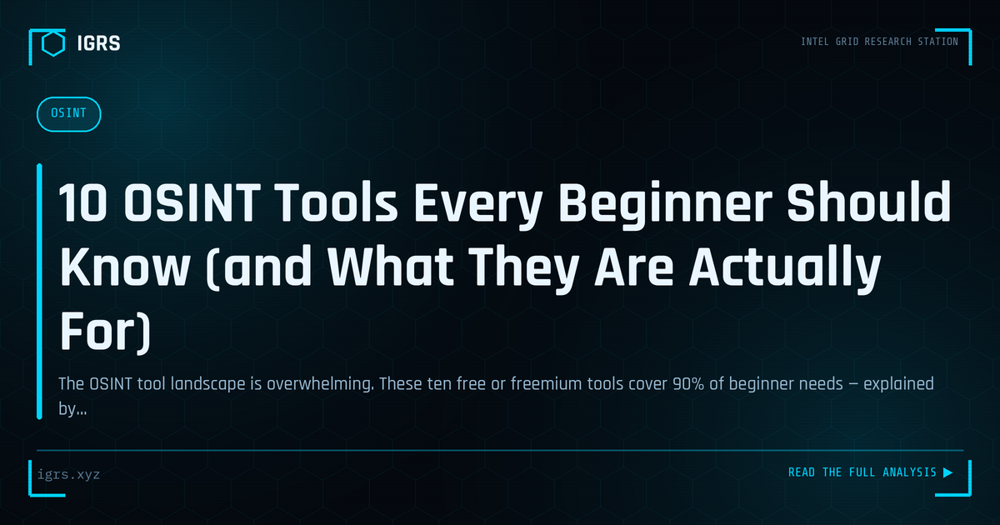

10 OSINT Tools Every Beginner Should Know (and What They Are Actually For)
| File No. | OD-005/2026 |
| Subject | Survey of foundational OSINT tooling with lawful use context |
| Category | OSINT Fundamentals |
| Author | Manuj Kumar Pandey |
| Published | 2026-05-07 |
| Reading time | 12 minutes |
The OSINT tool landscape is overwhelming. These ten free or freemium tools cover 90% of beginner needs — explained by what investigative question each one answers.
Starting Your OSINT Journey
Open Source Intelligence can seem intimidating to beginners — a vast field of tools, techniques, and tradecraft. But everyone starts somewhere, and OSINT is remarkably accessible: most of what you need is free, legal, and learnable through practice. This guide provides a structured starting point for beginners, covering the essential tools, foundational techniques, and the mindset that turns a newcomer into a capable investigator.
The OSINT Mindset
Before tools, OSINT requires a way of thinking. Good investigators are curious, methodical, and sceptical. They start with a clear question, follow evidence rather than assumptions, corroborate findings across sources, and document as they go. They think in terms of pivots — how one piece of information leads to the next. Cultivating this disciplined curiosity matters more than memorising any particular tool.
Essential Beginner Tools
| Tool | Purpose |
|---|---|
| Google (advanced search) | Targeted information discovery |
| Reverse image search | Verifying and tracing images |
| Have I Been Pwned | Checking breached accounts |
| Wayback Machine | Historical web content |
| Sherlock / WhatsMyName | Finding usernames across platforms |
| WHOIS | Domain registration lookup |
Google Dorking: Your First Skill
Google dorking — using advanced search operators — is the ideal first OSINT skill. Operators like site: (limit to a domain), filetype: (find specific file types), intitle: (search page titles), and inurl: (search URLs) dramatically increase search precision. Combining these with quotes for exact phrases and the minus sign to exclude terms lets you find information that ordinary searches miss. Mastering dorking transforms Google from a casual tool into a precision instrument.
Reverse Image Search
Reverse image search is a beginner-friendly technique with powerful applications. Upload an image to Google Images, Yandex, or TinEye to find where it appears online, verify if a photo is genuine, expose stolen profile pictures, or identify locations and objects. Yandex is particularly strong for faces and locations. This single technique solves a remarkable range of verification problems.
Username Investigation
People reuse usernames across platforms, making username investigation highly productive. Tools like Sherlock and WhatsMyName check a username against hundreds of sites simultaneously, revealing where a person has accounts. This connects scattered profiles into a unified picture and often finds platforms where the subject was less careful about privacy. It is a simple technique with outsized results.
Email Investigation
An email address is a valuable pivot point for beginners. Have I Been Pwned reveals if the email appears in known data breaches. Searching the email in quotes on Google may surface associated accounts and activity. Email-to-account lookups can connect the address to social media profiles. From a single email, a beginner can often establish significant information about a person's online presence.
Practising Safely and Legally
Beginners should practise responsibly. Start by investigating yourself — it reveals your own digital footprint and teaches the techniques on familiar ground. Use deliberately created practice scenarios and OSINT challenges (CTFs). Always stay within legal boundaries: use only public information, never access private systems, and respect privacy and data protection law. Ethical practice from the start builds good habits.
Building a Workflow
As skills develop, beginners should build a methodical workflow: define the question, identify the starting data point, enrich it through relevant tools, pivot on each new finding, corroborate across sources, and document everything. This discipline distinguishes effective investigation from random searching. A documented, repeatable workflow also makes findings defensible if they are ever needed formally.
Learning Resources
The OSINT community offers abundant free learning resources. The OSINT Framework (osintframework.com) catalogues tools by category. Bellingcat publishes excellent guides and case studies. Practitioners share techniques through blogs and social media. OSINT CTF challenges provide hands-on practice. Engaging with this community accelerates learning and keeps skills current as tools and platforms evolve.
Common Beginner Mistakes
New investigators often make avoidable errors: relying on a single source without corroboration, accepting outdated information as current, neglecting to document findings, alerting subjects through careless interaction, and treating leads as proof. Awareness of these pitfalls helps beginners develop sound practice faster. The discipline to verify, document, and stay operationally careful separates reliable investigators from the rest.
Progressing Beyond the Basics
Once the fundamentals are comfortable, beginners can progress to specialised areas — social media investigation, geolocation, blockchain analysis, corporate research, or technical OSINT. Each builds on the same foundations of methodical thinking and corroboration. For those in India, learning the country-specific resources — government portals like MCA21, TAFCOP, and eCourts — adds powerful local capability. OSINT is a journey of continuous learning, and the beginner who masters the fundamentals and keeps practising will steadily grow into a skilled investigator.